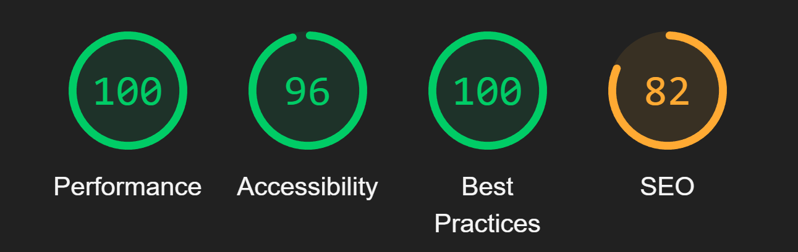
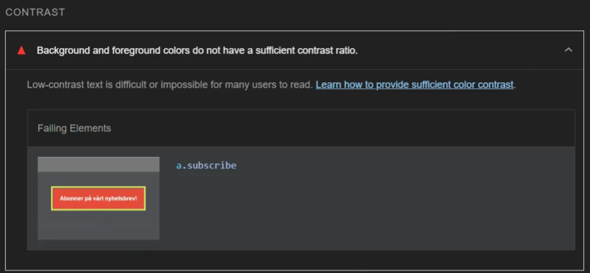
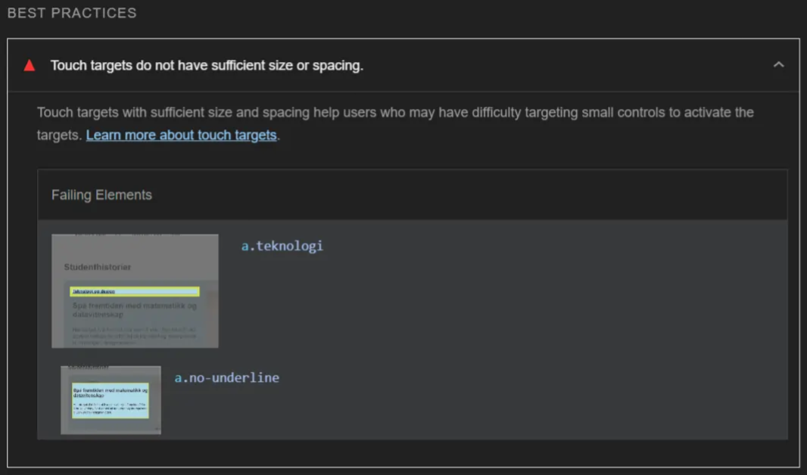

Accessibility
Accessibility ensures that websites are usable by everyone, including people with disabilities, making it a critical aspect of web design. For this project, we focused on aligning with the Web Content Accessibility Guidelines (WCAG). Using automated tools like Lighthouse and SonarLint, we identified areas to improve, such as low contrast, missing [alt] attributes, and touch target sizing. However, accessibility goes beyond automated checks. Through manual testing and thoughtful coding, we implemented features like semantic HTML and ARIA attributes. This page highlights the key improvements, coding choices, and tools used to achieve our accessibility goals.
Lighthouse Testing Results
The Lighthouse audit provided a snapshot of the site’s performance across various metrics. While the accessibility score of 96 indicates strong adherence to best practices, the audit highlighted a few issues that needed to be addressed.
Low Contrast Between Text and Background
One issue involved insufficient contrast on buttons, such as the "subscribe" button. Low contrast makes it difficult for users with visual impairments to read text. We adjusted the color palette to ensure all text met the Web Content Accessibility Guidelines (WCAG) for contrast ratios.
Touch Targets Too Small or Close Together
Certain clickable elements, such as navigation links, were flagged for insufficient size and spacing. This could make them difficult to use on touch devices, especially for users with motor impairments. We updated the CSS to increase padding and margins around touch targets.
